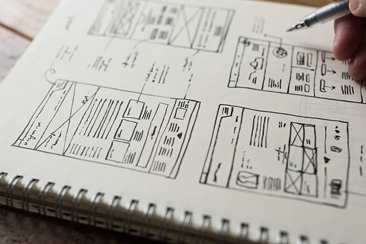
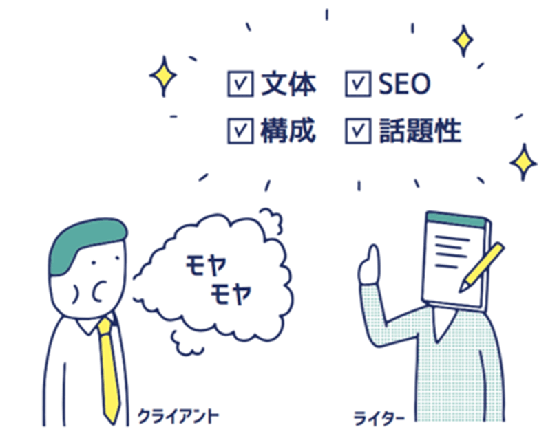
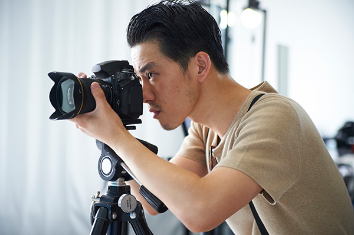
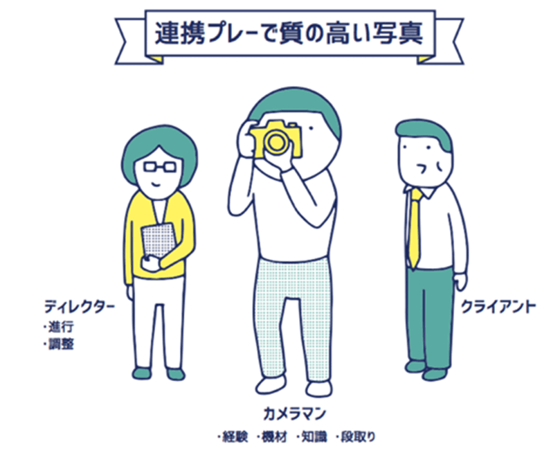
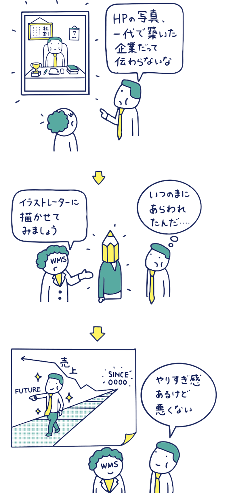
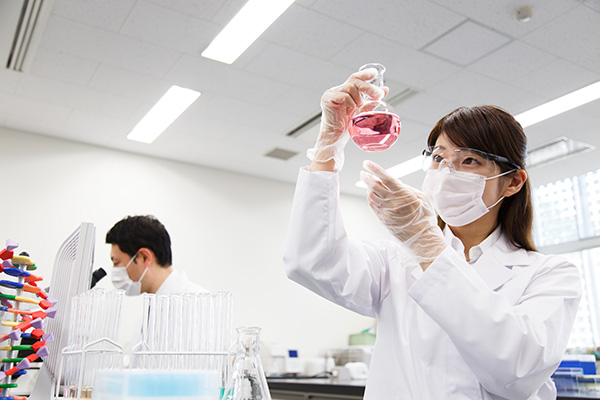
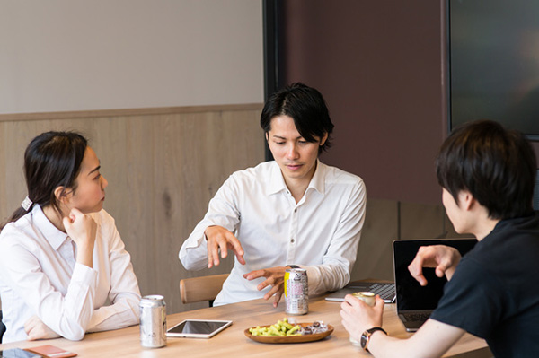
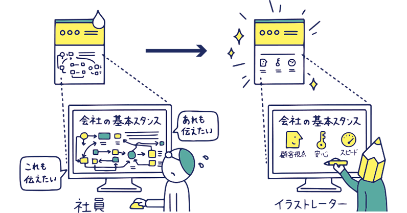

取材・撮影・イラスト
やりますWriting and shooting and illustrations
- HOME
- 取材・撮影・イラストやります
貴社からの情報を求めている人に貴社のサイトを訪れてもらう。その主要な方策がSEO、検索エンジンで上位に表示されることです。そしてSEOの王道はコンテンツの充実。
しかし、王道は往々にして苦難の道でもあります。掲載する文章や写真類を増やすためには、原稿を書いたり、撮影をしたりしなければなりませんが、ここがクライアントの負担になります。
ウェブマスターズは、取材に行ってサイトの原稿を書くこと、写真を撮影すること、内容に合致したイラストを制作することを、サイト構築の一環として積極的にお引き受けしています。
プロのライターに取材してもらう主なメリット
貴社の負担なくサクサク進みます
まず何といっても重要なことは、コンテンツを増やせることです。実務担当者に合間を見て書いてもらうのではなかなか進まないライティングや撮影が、プロのライターを使えばサクサク進みます。コンテンツを充実させ、サイト閲覧者の目的に合致するサイトにして、SEOでの順位を上げましょう。
子どものころに、作文が書けなくて苦労した経験をお持ちの方も多いと思います。文章を書くことは、それを仕事にしていない人にとっては、大きな負担です。盛り込みたい話題を集め、構成を考え、適切な言葉を選び、伝わる文章として組み上げていく。この不慣れな作業に湯水のごとく時間を消費してしまうことは、担当する人の時間を奪うことと、情報を求めている人に届くのが遅れることの、二重の意味でもったいないのです。

文章の質とSEO力が高まります
時間をかけたからといって質の良い文章ができるとは限りません。プロのライターは、どのような内容をどの程度の文字数で書くとコンテンツとして成り立つか、読者に分かりやすく飽きずに読めるか、といった文章の質を高めるノウハウを持っています。取材で集めるネタの量などの、サイトで必要とされるコンテンツを成立させる事前の準備も的確で、読者を想定した表現や語彙も方法も多彩です。
また、質と併せて大事なのがSEOです。検索エンジンも、文章を読み込んで検索順位付けに使っています。SEOでは、情報の充実度の他にいくつか留意点があります。例えば、キーワード。人間にとっては、重要単語やフレーズであっても頻繁過ぎると拙い文章に感じられますが、検索エンジンは単に出現頻度を見ています（多いほど良い、ではなく、適量が大切）。また、タイトルや小見出しにあるキーワードは重要視されます。
誰でもできそうでなかなか難しいのが文章書き。プロのライターを使って、質と時間を買いましょう。

作り手の理解の深まり
取材や撮影の過程では、ライターがクライアントの現場に入り、そこで働く人のナマの声に触れることになります。ライターが肌で感じた文章を通してわたしたち作り手側の理解が深まると同時に、ディレクターやプロデューサーも取材に同行しますのでより理解が深まります。例えば、企業理念。「社会に貢献する」など抽象的になりがちで、どこかで聞いたことのありそうな文言の場合も少なくありません。しかし、現場に行ってみると、その理念が具体的な行動になって表れているところに出くわすことがあります。挨拶が事務的に感じられる場合もあれば、心のこもった歓迎として伝わってくることもあります。たまたま居合わせた時に耳にする電話の対応や、オフィス内の整理整頓なども、企業理念の現れと言えるでしょう。取材や撮影で現場に触れることで、私たち作り手が生きた企業としてのクライアントに触れ、肌感覚でクライアントを理解することができます。
「よそ者」の視点による新たなコンテンツの発掘
部外者がクライアントの現場に赴くことで、内部の人には気づきにくいことに気づけることがあります。内部の人には当たり前の習慣、サービス、風景。それが外の人には初めて見るものだったり、とても魅力的だったり。外から取材に入ることで、それらを素材にして、新たなコンテンツ、一般閲覧者の興味に応えるコンテンツを育てることができるのです。
部外者が入ることで、クライアント自身の考えが明確になったり広がったりすることも期待できます。話をすることで頭の中が整理される、という事象ですね。仕事にある楽しさが膨らみます。
イノベーションには「若者、ばか者、よそ者」の三者が必要と言われます。「若者」はまだ社会やその組織の常識に染まっていない人、「ばか者」は常識的には愚かと言われそうなアイディアを物おじせずに言える人、そして、「よそ者」は関係者にはない客観的な視点をもって内部を見ることができる人です。「よそ者」の視点を活かしてください。
プロのカメラマンに撮影してもらう主なメリット
イメージを実現させる力
実物と乖離した写真は信頼度が低くなります。特に商材の場合、実際に商品を手にしたお客様がサイトで見た商品のイメージと齟齬がある場合に顕著です。また、人物写真では求められるイメージを実現させるため、モデルの表情・動きを引き出す工夫が必要です。プロのカメラマンは、好奇心を持って被写体に向き合い、見る人の心に響くイメージを実現させます。

知識と機材の差が出ます
撮影は誰にでもできますが、経験や知識の有無によって見栄えには大きな差が出ます。正確なカメラ設定、光量・画角調整はもちろん、プロのカメラマンは、わたしたち作り手との連携が取れているので、ページ内の掲載場所との兼ね合いやトリミングまで考えた撮影を行います。それらは撮影後の画像加工ではフォローしきれません。
また、機材の差が出ることも多いです。商材や人物の輪郭を際立たせるシャープなラインは特別なレンズによりもたらされますし、屋内撮影でも人物が明るく美しいのは照明機材の力です。性能も価格も数ランク上のカメラ機材を使いこなせる技術と知識があるからこそ、商品や人物の魅力的な写真を撮ることができるのです。

プロのイラストレーターにイラストを描いてもらう主なメリット
内容に合った的確な絵が描ける
内容に合った的確な画像を置ける。これが優秀なイラストレーターに依頼するメリットのほぼすべてです。私たちも素材写真をたくさん購入して使用しています。割とよくあるシーンをイメージしてもらう程度の写真なら探せるのですが、一般には公開されない場所や人などを必要とする場合や、空想的な内容、概念的な内容を必要とするときに、無理があります。イラストであれば、内容に合っていて必要十分な情報を盛り込み、不要な情報を排除した絵を描くことができます。
大事なところにフォーカスできる
写真はすべての被写体を単純公平に画像化してしまいますので、意図を理解させにくい場合があります。優れたイラストレーターが描くイラストでは、本質を強調するためにデフォルメする、主役でない多くの要素をバッサリ削除するなどの思い切った処理が行われています。
クライアントのご担当者等の一般の人がPPT等で書いた原稿を元にイラスト専門でないデザイナーにイラスト化してもらうこともありますが、多くの場合で清書の範囲を出ません。見る人を捉えるイラストにするためには、情報の取捨選択と大胆な割り切り。それを可能にするのは、イラストレーターならではの経験や知見です。
同一ページ内に似たり寄ったりの写真多用を避けられる
写真を使う場合、似たり寄ったりの写真が多用されてしまうことがあります。撮影できる場所が自社内に限られれば、壁などの背景が同じような写真ばかりになってしまいます。素材サイトからの購入であればその範囲からしか選べません。結果として、全体を網羅的に見てみると、色合いが似た写真ばかり、人が集まっている写真ばかり、といった状態になりかねません。
イラストであれば、色合いのコントロール、統一することもばらすことも簡単です。似たものが並んでしまったときに、何かをクローズアップするとかアイディア次第でバリエーションを増やせます。写真の撮り直しが容易でない場合もありますが、イラストであれば難しくありません。

取材・撮影の事例
大学研究所の研究内容紹介
ご要望や問題点

専門性の高い大学の研究機関。その研究内容を紹介するサイト構築の中で、研究者の取材を担当しています。普段は専門家をターゲットとした論文という情報発信をしている先生方ですが、論文では情報の正確さや理論の整合性が重視されるため、一般の人にとっては分かり難い構成であったり、理解の前提となる条件が省かれてしまっていたりします。
プロジェクト
外部からの取材を入れることで、理解しやすい順序に変更したり、説明を補足したり、難しいところを省いたり、一般向けのコンテンツとして無理のないものに仕上げました。
内容は多岐にわたります。理学、工学、心理、教育、経済、生物、歴史など。さらに、学際化が進んでいますので、既存の学問概念を複数包含する分野や、新しい領域の学問なども登場します。
こうした分野の最先端の研究者に話を伺い、理解するための基盤を固め、世界の動向に興味をもって向き合うことで、クライアントの情報発信の目的に叶ったコンテンツ作りを継続して行っています。
数ある商品をソリューションで整理
ご要望や問題点
とあるメーカーの事例です。新商品開発に力を入れ、顧客の要望にもカスタマイズで積極的に応えてきた結果、多種多様な商品を持つに至っていましたが、商品と管轄部署の細分化が進む中で類似商品間の連携ができず、最適な商品を提案できなくなっていました。
サイトも商品別構成になっていたので、サイト閲覧者から見ると自分の課題を解決してくれる商品の情報がバラバラに存在していたことになります。
プロジェクト
弊社では、ソリューションを切り口にして商品を分類し、ソリューションを軸にまとめた情報を提供する新サイトを提案しました。
このような構成になると、ひとつのソリューションに複数の部署が関わるため、ソリューション全体を語れる適材が見当たりません。無理を承知でお願いすると、原稿作りが進まずにプロジェクトが止まってしまいかねません。そこで、弊社にてライターを立てて商品の担当者や開発に関わったエンジニアなどに取材を行い、商品ごとのコンセプトや特徴を理解した上で、ひとつのソリューションを紹介するコンテンツにまとめました。
採用ページでの先輩インタビューと座談会
ご要望や問題点

地域に根差して活動するガス供給会社のサイトを構築し、その運用をお手伝いしています。そのクライアントから、採用活動を今まで以上に積極的に展開するという方針をご連絡いただき、採用ページの充実を図ることになりました。
プロジェクト
採用ページのコンテンツとなる先輩社員のインタビューや社員座談会を提案し、担当しました。地域に根差した会社ですので、まずは、お客様のガスご利用を一軒々々丁寧にサポートする営業マンが必要とされます。一方でデジタル革命の進む現代において、IT活用による業務効率化やサービスのデジタル化を担う人材も欲しいところ。こういった方針を理解し、全体のすり合わせを行い、インタビューや座談会のテーマと質問項目を作成して実施し撮影も行い、コンテンツ化まで実現しました。
インタビューや座談会では、ライティングもさることながら、トークの中で魅力的なコンテンツとなるネタを拾い集めること、元になる種を出してもらうことが、大変重要です。事前に準備する質問事項やトークのシミュレーション、当日のアイスブレイクなどを駆使した話しやすい雰囲気づくり、適度な掘り下げなど、取材力の高いライターが求められます。
イラストの再作成
ご要望や問題点

会社の基本スタンスを説明するページに掲載したイラストのケースです。クライアント担当者が作成したイラスト原稿をそのまま清書して使っていましたが、内容が混み入っていて解説がないと分からないものとなっていました。担当者はその内容を理解し良いものであると知っているので、ついついどれも伝えたいと思い、あれもこれもと盛り込みがちになります。しかし、会社の基本スタンスを説明するということは、この会社との初めての接点であると想定されるので、そこまで詳細な情報は必要なく、むしろ、難しくて見てもらえないことの方が問題です。
プロジェクト
基本スタンスのページで使われているイラストを全面的に見直し、初めての閲覧者が説明なしでも理解できる簡素化、内容の絞り込みを行いました。